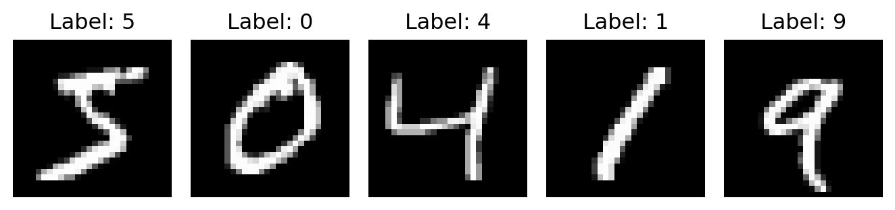
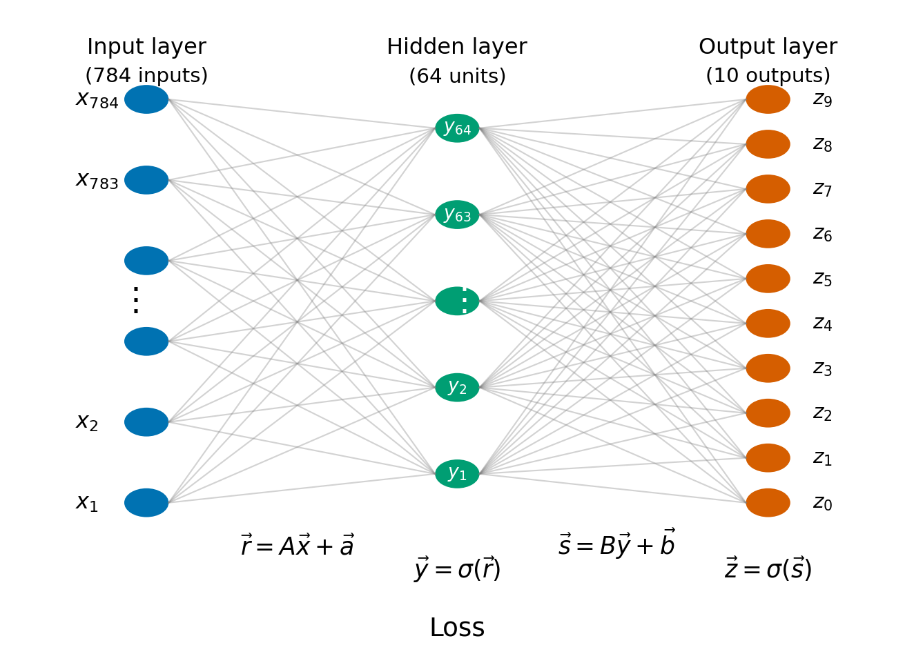
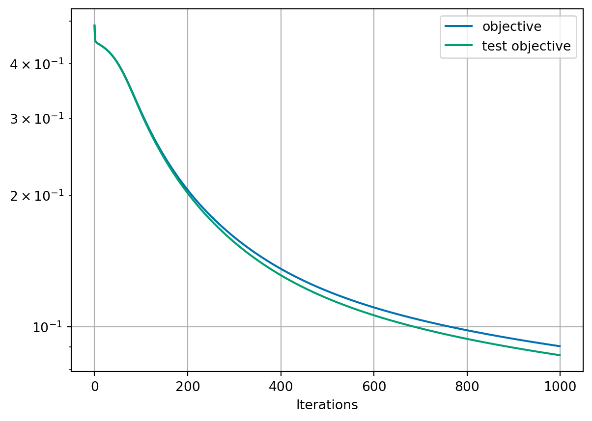
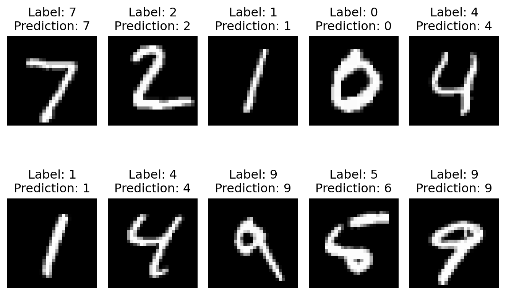

9 An introduction to training neural networks
9.1 Problem
We want to train a neural network to recognise handwritten digits 0-9.
We will solve this using gradient descent to “train” the neural network. We will use the chain rule to find the gradient of a composite function.
We will use a dataset to help us called the MNIST handwritten digit dataset. It contains 70,000 images all labelled with the correct digit. Each image is a \(28 \times 28\) greyscale image, so each image contains 784 pixel values. The task is to assign the image to one of the ten classes \(\{0, 1, 2, 3, 4, 5, 6, 7, 8, 9\}\).
The input \(28 \times 28\) images are “flattened” row-by-row by rearranging the pixel values into a single column vector \(\vec{x} \in \mathbb{R}^{784}\).
For output, we want the network to give (approximately) a value 1 in the correct position of a 10 dimensional vector.
We express this mathematically by saying that we want a function: \[ \vec{\mathcal{F}} \colon \mathbb{R}^{784} \to \mathbb{R}^{10} \]
The function, we want to optimise should capture the given labels for a subset of all images (called the training set). This will leave further sample labels to test to see how well our method is performing. The optimisation will be over some parameters (which we define shortly) in the function \(\vec{\mathcal{F}}\). We will call \(X\) the set of training images (of size \(N\)) and suppose we have a labelling function \(L \colon X \to \mathbb{R}^{10}\) which takes an image in the training set and gives the correct label. We will use the notation \(L = (L_1, \ldots, L_10)\).
image 0 has L = 0.0, 0.0, 0.0, 0.0, 0.0, 1.0, 0.0, 0.0, 0.0, 0.0
image 1 has L = 1.0, 0.0, 0.0, 0.0, 0.0, 0.0, 0.0, 0.0, 0.0, 0.0
image 2 has L = 0.0, 0.0, 0.0, 0.0, 1.0, 0.0, 0.0, 0.0, 0.0, 0.0
image 3 has L = 0.0, 1.0, 0.0, 0.0, 0.0, 0.0, 0.0, 0.0, 0.0, 0.0
image 4 has L = 0.0, 0.0, 0.0, 0.0, 0.0, 0.0, 0.0, 0.0, 0.0, 1.09.2 The neural network
We will work with what is called a dense neural network with one input layer, one output layer and one hidden layer. The input layer represents the pixel values in the flattened image (784 values) and the output layer represents the output prediction of the correct label (10 values). The hidden layer is what brings everything together and we will use \(64\) values in this layer.

The function \(\vec{\mathcal{F}}\) is composed of the following functions.
We first form the affine map \(\vec{r} = \vec{r}(\vec{x}) = A \vec{x} + \vec{a}\) for \(A \in \mathbb{R}^{64 \times 784}\) and \(\vec{a} \in \mathbb{R}^{64}\)
Then, we apply a sigmoid function to each component of the output \(\vec{r}\): \(\vec{y} = \vec{y}(\vec{r})\) with \(y_k = \sigma(r_k)\). The output \(\vec{y}\) is called the “hidden layer”. In this example, we will use the function \(\sigma\) \[ \sigma(t) = \frac{1}{1 + \exp(-t)}. \]
Then, we form a second affine map \(\vec{s} = B \vec{y} + \vec{b}\) for \(B \in \mathbb{R}^{10 \times 64}\) and \(\vec{b} \in \mathbb{R}^{10}\)
Finally, we apply the sigmoid to each component of the output \(\vec{s}\): \(\vec{z} = \vec{z}(\vec{s})\) with \(z_i = \sigma(s_i)\).
The full map \(\vec{\mathcal{F}}\) is the composition: \[ \vec{\mathcal{F}}(\vec{x}) = \vec{z}(\vec{s}(\vec{y}(\vec{r}(\vec{x})))) \] This gives function \(\vec{\mathcal{F}} \colon \mathbb{R}^{784} \to \mathbb{R}^{10}\).
In the mathematical discussion below, we first describe the network for a single image \(\vec{x} \in \mathbb{R}^{784}\). In the implementation, however, we process many images at once using matrix notation. We store all \(N\) flattened training images as the columns of a matrix \(\mathbb{R}^{784 \times N}\) and store the labels as \(\mathbb{R}^{10 \times N}\). The numpy code is therefore a vectorised version of the same formulas, applied to all the training samples simultaneously.
9.3 The objective function
To train the network, we need a quantity to minimise. Since we want the neural network output to match the labels, the simplest choice uses the square of the Euclidean norm. For a single (flattened) image \(\vec{x}\) this means \[ J(\vec{x}) = \frac{1}{2} \| \vec{L}(\vec{x}) - \vec{\mathcal{F}}(\vec{x}) \|^2 \] For the full training set, we simply average this quantity over all \(N\) (flattened) images in \(X\). \[ F = \frac{1}{N} \sum_{\vec{x} \in X} J(\vec{x}) = \frac{1}{2N} \sum_{\vec{x} \in X} \| \vec{L}(\vec{x}) - \vec{\mathcal{F}}(\vec{x}) \|^2. \]
As we mentioned previously, we want to optimise for parameters in the function \(\vec{\mathcal{F}}\). Precisely, these are the values \(A\) (size \(64 \times 784\)), \(a\) (size \(64\)), \(B\) (size \(10 \times 64\)) and \(\vec{b}\) (size \(10\)). In total this corresponds to \(50,890\) parameters so we can say that \(F \colon \mathbb{R}^{50\,890} \to \mathbb{R}\).
def objective(z, targets):
# objective function F
L = indicator_matrix(targets, number_of_classes=z.shape[0])
return 0.5 * np.mean(np.sum((L - z) ** 2, axis=0))
def classification_accuracy(z, targets):
# measures how many targets we have correct
predicted_targets = np.argmax(z, axis=0)
return np.mean(predicted_targets == targets)
def evaluate(x, targets, A, a, B, b):
_, _, _, z = forward_map(x, A, a, B, b)
current_objective = objective(z, targets)
current_accuracy = classification_accuracy(z, targets)
return current_objective, current_accuracy9.4 Gradient descent
The gradient descent algorithm will update the parameters \(A, \vec{a}, B\) and \(\vec{b}\) using the rules: \[\begin{align*} A_{ij} & \leftarrow A_{ij} - \alpha \frac{\partial F}{\partial A_{ij}}, &\qquad a_i & \leftarrow a_i - \alpha \frac{\partial F}{\partial a_i}, \\ B_{ij} & \leftarrow B_{ij} - \alpha \frac{\partial F}{\partial B_{ij}}, &\qquad b_i & \leftarrow b_i - \alpha \frac{\partial F}{\partial b_i}. \end{align*}\] Note, here we are not tracking the iteration numbers in this notation.
The values of the parameters are well hidden in our definition of both the neural network operator and our objective function! But we can see that there are lots of compositions going on that need resolving!
We compute the gradients component by component in turn, working from outer-most to inner-most functions by applying the chain rule. The code then implements the same calculations in vectorised matrix form so that all training examples are processed simultaneously. To help writing these functions, we will make use of the Kronecker delta (identity matrix) \(\delta\) which has entries \(\delta_{ij} = 1\) if \(i = j\) and \(0\) otherwise.
We have \[ F(\vec{z}) = \frac{1}{2N} \sum_{\vec{x} \in X} \| \vec{L}(\vec{x}) - \vec{z} \|^2, \] so, \[ \frac{\partial F(\vec{z})}{\partial z_i} = \frac{1}{N} \sum_{\vec{x} \in X} z_i - L_i(\vec{x}). \]
Next, we have \(\vec{z}_i = \sigma(s_i)\) so we have \[ \frac{\partial z_i}{\partial s_j} = \delta_{ij} \sigma'(s_j). \] So we can compute that \[\begin{align*} \frac{\partial F(\vec{s})}{\partial s_j} & = \sum_{i=0}^{9} \frac{\partial J(\vec{z})}{\partial z_i} \frac{\partial z_i}{\partial s_j} = \sum_{i=0}^{9} \frac{\partial J(\vec{z})}{\partial z_i} \delta_{ij} \sigma'(s_j) = \frac{\partial J(\vec{z})}{\partial z_j} \sigma'(s_j) \\ & =\frac{1}{N} \sum_{\vec{x} \in X} (z_j - L_j(\vec{x})) \sigma'(s_j). \end{align*}\]
We can compute partial derivatives with respect to the second matrix and offset vector \(B\) and \(\vec{b}\). We have \(\vec{s} = B \vec{y} + \vec{b}\), so \[ \frac{\partial s_j}{\partial B_{kl}} = \delta_{jk} y_l, \quad\text{and}\quad \frac{\partial s_j}{\partial b_k} = \delta_{jk}, \] and we can compute that \[\begin{align*} \frac{\partial F(B, \vec{b})}{\partial B_{kl}} & = \sum_{j=0}^{9} \frac{\partial F(\vec{s})}{\partial s_j} \frac{\partial s_j}{\partial B_{kl}} = \sum_{j=0}^{9} \frac{\partial F(\vec{s})}{\partial s_j} \delta_{jk} y_l = \frac{\partial F(\vec{s})}{\partial s_k} y_l \\ & = \frac{1}{N} \sum_{\vec{x} \in X} (z_k - L_k(\vec{x})) \sigma'(s_k) y_l, \\ \frac{\partial F(B, \vec{b})}{\partial b_k} & = \sum_{j=0}^{9} \frac{\partial F(\vec{s})}{\partial s_j} \frac{\partial s_j}{\partial b_{k}} = \sum_{j=0}^{9} \frac{\partial F(\vec{s})}{\partial s_j} \delta_{jk} = \frac{\partial F(\vec{s})}{\partial s_k} \\ & = \frac{1}{N} \sum_{\vec{x} \in X} (z_k - L_k(\vec{x})) \sigma'(s_k). \end{align*}\]
Then we continue with derivatives with respect to \(\vec{y}\). Recall, we have \(\vec{s} = B \vec{y} + \vec{b}\) so \[ \frac{\partial s_j}{\partial y_k} = B_{jk}, \] and we can compute that \[ \frac{\partial F}{\partial y_k} = \sum_{j=0}^{9} \frac{\partial F}{\partial s_j} \frac{\partial s_j}{\partial y_k} = \sum_{j=0}^{9} \frac{\partial F}{\partial s_j} B_{jk} = \frac{1}{N} \sum_{\vec{x} \in X} \sum_{j=0}^{9} (z_j - L_j(\vec{x})) \sigma'(s_j) B_{jk}. \]
Then we compute derivatives with respect to \(\vec{r}\). We have \(y_k = \sigma(r_k)\) so we can compute that \[ \frac{\partial y_k}{\partial r_l} = \delta_{kl} \sigma'(r_l), \] and \[\begin{align*} \frac{\partial F}{\partial r_l} & = \sum_{k=1}^{64} \frac{\partial F}{\partial y_k} \frac{\partial y_k}{\partial r_l} = \sum_{k=1}^{64} \frac{\partial F}{\partial y_k} \delta_{kl} \sigma'(r_l) = \frac{\partial F}{\partial y_l} \sigma'(r_l) \\ & = \frac{1}{N} \sum_{\vec{x} \in X} \sum_{j=0}^{9} (z_j - L_j(\vec{x})) \sigma'(s_j) B_{jl} \sigma'(r_l). \end{align*}\]
Finally, we can compute the derivatives with respect the first parametric matrix and offset vector From \(\vec{r} = A \vec{x} + a\), we have \[ \frac{\partial r_l}{\partial A_{mn}} = \delta_{lm} x_n, \quad\text{and}\quad \frac{\partial r_l}{\partial a_m} = \delta_{lm}, \] so \[\begin{align*} \frac{\partial F}{\partial A_{mn}} & = \sum_{l=1}^{64} \frac{\partial F}{\partial r_l} \frac{\partial r_l}{\partial A_{mn}} = \sum_{l=1}^{64} \frac{\partial F}{\partial r_l} \delta_{lm} x_n = \frac{\partial F}{\partial r_m} x_n \\ & = \frac{1}{N} \sum_{\vec{x} \in X} \sum_{j=0}^{9} (z_j - L_j(\vec{x})) \sigma'(s_j) B_{jm} \sigma'(r_m) x_n, \\ \frac{\partial F}{\partial a_m} & = \sum_{l=1}^{64} \frac{\partial F}{\partial r_l} \frac{\partial r_l}{\partial a_m} = \sum_{l=1}^{64} \frac{\partial F}{\partial r_l} \delta_{lm} = \frac{\partial F}{\partial r_m} \\ & = \frac{1}{N} \sum_{\vec{x} \in X} \sum_{j=0}^{9} (z_j - L_j(\vec{x})) \sigma'(s_j) B_{jm} \sigma'(r_m). \end{align*}\]
This can be implemented in code.
We use one final helper function. The sigmoid function is often chosen to help simplify the calculation of the derivative of the \(\sigma\) function. We can use this same trick here:
# ----------------------------
# Parameter initialisation
# ----------------------------
def initialise_parameters(random_number_generator):
A = random_number_generator.normal(
0.0,
np.sqrt(1.0 / input_dimension),
size=(hidden_dimension, input_dimension),
).astype(np.float32)
a = np.zeros((hidden_dimension,), dtype=np.float32)
B = random_number_generator.normal(
0.0,
np.sqrt(1.0 / hidden_dimension),
size=(output_dimension, hidden_dimension),
).astype(np.float32)
b = np.zeros((output_dimension,), dtype=np.float32)
return A, a, B, b
# ----------------------------
# Gradient descent
# ----------------------------
def train_network(x, targets, test_inputs, test_targets):
random_number_generator = np.random.default_rng(seed)
A, a, B, b = initialise_parameters(random_number_generator)
L = indicator_matrix(targets, output_dimension)
N = x.shape[1]
accuracy_measures = {
"objective": [],
"test objective": [],
"test accuracy": [],
}
for _ in range(1, iterations + 1):
# Forward map
(_, y, _, z) = forward_map(x, A, a, B, b)
# --------------------------------------------------------
# Gradient via chain rule (backpropagation)
# --------------------------------------------------------
sigma_p_z = sigma_prime_from_value(z)
sigma_p_y = sigma_prime_from_value(y)
# gradient of objective wrt to s
dF_ds = ((z - L) * sigma_p_z) / N # componentwise multiply
# Gradients for the second parameter matrix and offset vector
# dF / dB
dF_dB = dF_ds @ y.T
# dF / db
dF_db = np.sum(dF_ds, axis=1)
# Move the gradient back to the hidden layer
# dF / dy
dF_dy = B.T @ dF_ds
# Gradient of objective wrt to r
# dF / dr
dF_dr = dF_dy * sigma_p_y # component wise multiply
# Gradients for the first parameter matrix and offset vector
# dF / dA
dF_dA = dF_dr @ x.T
# dF / da
dF_da = np.sum(dF_dr, axis=1)
# --------------------------------------------------------
# Gradient descent step
# --------------------------------------------------------
A = A - alpha * dF_dA
a = a - alpha * dF_da
B = B - alpha * dF_dB
b = b - alpha * dF_db
# test on training data
(_, _, _, z) = forward_map(x, A, a, B, b)
current_objective = objective(z, targets)
# test on test data
test_objective, test_accuracy = evaluate(
test_inputs, test_targets, A, a, B, b
)
accuracy_measures["objective"].append(current_objective)
accuracy_measures["test objective"].append(test_objective)
accuracy_measures["test accuracy"].append(100.0 * test_accuracy)
return (A, a, B, b, accuracy_measures)9.5 Testing it out
We set some important parameters for the algorithm
We also use an extra function to pick out the output \(\vec{z}\) with the highest value to make our prediction of the final output value:
We can now do the training:
training_inputs, training_targets, test_inputs, test_targets = load_mnist()
# take transpose so that each column is a flattened image
training_inputs = training_inputs.T
test_inputs = test_inputs.T
print("training inputs shape:", training_inputs.shape)
print("training targets shape:", training_targets.shape)
print("test inputs shape: ", test_inputs.shape)
print("test targets shape: ", test_targets.shape)
print()
start = time.perf_counter()
A, a, B, b, accuracy_measures = train_network(
training_inputs,
training_targets,
test_inputs,
test_targets,
)
end = time.perf_counter()
print(f"completed {iterations} iterations in time {end - start:.4f}s.")training inputs shape: (784, 60000)
training targets shape: (60000,)
test inputs shape: (784, 10000)
test targets shape: (10000,)
completed 1000 iterations in time 177.5483s.Let’s see how well we’ve done:

Final train objective: 0.090323
Final test objective: 0.086149
Final test accuracy: 90.97%We see that we are achieving more than 90% accuracy within 1000 iterations and we have not converged to the best solution yet.
Let’s see some examples of the classes and our predictions

I don’t think this is too bad!
For one incorrect prediction (predicted 6 instead of 5), we can also check all \(\vec{z}\) values that have:
z values:
0: 0.032788
1: 0.002198
2: 0.085792
3: 0.000049
4: 0.108685
5: 0.025088
6: 0.593296
7: 0.001090
8: 0.008090
9: 0.012378We see that we were quite confident in our prediction and weren’t close to predicting 5!
9.6 Summary and outlook
We have demonstrated the simplest possible approach to training a neural network for the task for recognising hand-written numbers.
There are a few changes recommended to improve the performance of our neural network.
Replace the second sigmoid function by a softmax. This would mean \(\vec{z} = \vec{z}(\vec{s})\) is given by: \[ z_i(\vec{s}) = \frac{\exp(s_i)}{\sum_{j=0}^9 \exp(s_j)}, \] and replace the L2 loss function by a cross-entropy loss. Then \(J\) would be given by: \[ J(\vec{x}) = - \sum_{i=0}^9 L_i(\vec{x}) \log z_i. \]
Replace the first sigmoid with a different activation function such as ReLU: \[ y_k = \max(0, r_k). \]
Add one or more network layers…